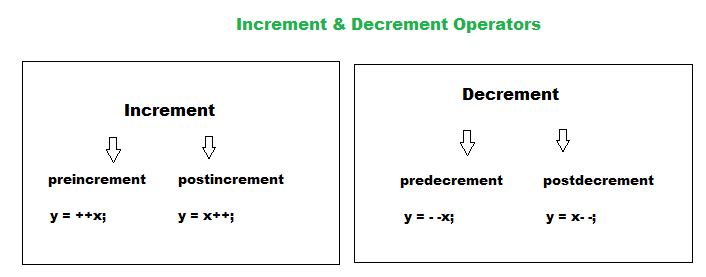
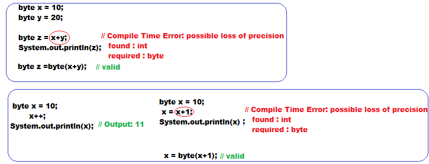

Increment and Decrement Operators

- Increment and decrement operators we can apply only for variables but not for constant values, otherwise we will get compile time error .
Example::
- We can not perform nesting of increment or decrement operator, otherwise we will get compile time error .
- For the final variable we can not apply increment or decrement operators, otherwise we will get compile time error .
- We can apply increment and decrement operators even for primitive data types except boolean .
Difference between x++ and x = x+1 .
- If we are applying any arithmetic operators between two operands 'x' and 'y' the result type is :
max(int,type of x,type of y)

- In the case of increment and decrement operators internal type casting will happened automatically by the compiler .